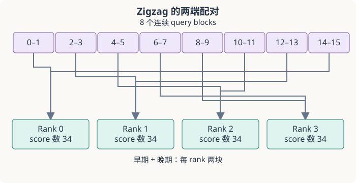
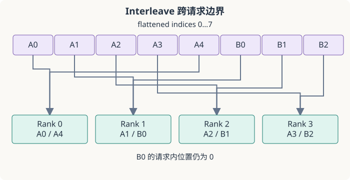

第 36 章 · SGLang 长上下文系统
Prefill Context Parallelism：Zigzag 与 Interleave
长 Prompt 的 query 计算如何沿序列维分布，同时保留完整因果语义？
长 Prompt 的 query 计算如何沿序列维分布，同时保留完整因果语义？ 本章从具体反例出发，再追踪运行时数据结构与正确性条件。
1. 为什么长 Prompt 需要沿序列切分
TP 分权重与 attention heads，DP 分请求；但单条 128K prompt 的 query/indexer 计算仍可能成为长关键路径。Prefill CP 把新 query 分给多个 rank，每个 query 仍需看到同一请求的合法历史 KV。它不是让每个 rank 只看自己的 tokens。
2. Zigzag：从因果三角形获得负载均衡
设单请求有 16 个新 token，CP=4，切成 8 个连续 blocks，各 2 token。rank r 接收 block r 与 block 2C−1−r。rank0 获得 0,1,14,15，rank1 获得 2,3,12,13；便宜的早期 query 与昂贵的晚期 query 配对。余数分给前部 blocks，通信可能需要 padding。

3. 从 causal mask 推导工作量
简化 dense attention 中，有 P 个已缓存 prefix tokens，位置 i（从 0 计）可见 P+i+1 个 key。设 rank 的新 query 位置集合为 I_r，则 score 元素数为下式。P=0、16 tokens 时，每 rank 的 zigzag 工作量都为 34；简单连续 4-token 切分得到 10、26、42、58。实际 kernel 时间不是 score 数的线性函数。
4. Interleave：批级索引而非每请求重置
CP4 对新 tokens 的 flattened index j 使用 j mod 4。若 batch 中 A 有 5 tokens，B 有 3，rank0 得 A0、A4；rank1 得 A1、B0。B0 是请求 B 的第一个新 token，其 position ID 与可见 prefix 按 B 自身决定。误把 flatten index 当 position 会改变 RoPE 与 causal mask。

5. 从 metadata 到 Attention
ContextParallelStrategy 把 layout 与执行分开；ForwardBatch.attn_cp_metadata 承载本次状态。Zigzag 分开记录 early/late queries 的 KV lengths；FlashAttention 路径 gather/reorder 新 KV。Interleave DSA 需配合 indexer 和 MLA KV gather，具体 backend 支持按 pinned 文档核查。
6. 与缓存分片及其他并行组合
第 33 章的 CP page sharing 负责持久 cache placement，本章分 query 计算。DSA LayerSplit 又按 layer 拥有 KV/indexer（该路径要求 PD prefill、interleave、PP=1 与指定传输 backend）。Attention TP 分 heads，attention DP 分 requests，EP 的 token dispatch 是不同通信；不能把所有并行度直接相乘。
7. 部署限制与反例
CP 会引入 gather、padding、重排与跨 rank 同步，短 prompt 或缓存命中很高时可能不划算。固定版本的 CP breakable prefill graph 路径要求 zigzag、trtllm_mha 与 CP=TP；其他路径不能从这个条件推断支持。测量每 rank query 数、因果 score 数、通信字节、TTFT 和实际工作负载，勿把 toy 平衡视为吞吐实测。
8. 交互：机制状态与反例
Prefill CP 教学实验
连续切分：四 rank 各取连续 4 tokens；score 元素数 [10,26,42,58]，最晚 rank 工作最多。
Zigzag：I0={0,1,14,15}，四 rank 各 34；配对平衡的是简化 causal score 数。
Interleave：A 长 5、B 长 3，rank1 处理 A1 与 B0，B0 的局部位置仍是 0。
教学模型仅验证机制与反例，不代表真实 GPU benchmark。
9. CPU 最小实验
使用 Python 标准库验证上文核心不变量，下载 prefill_cp_layout.py。源文件包含正例、异常或边界断言。
python3 examples/prefill_cp_layout.py实验不运行真实 SGLang GPU serving、collectives、网络传输或模型训练。
10. 源码阅读路线与证据
固定上游快照 b1ef3a60797aa6c29bcfa4cc3bc135dd2f19ec22。论文贡献、运行时实现和教学推导分开标注。
- Strategy interface / Zigzag strategy：ContextParallelStrategy separates layout policy from execution; zigzag splits each request into 2C blocks and assigns paired early/late blocks.
- Interleave strategy / Attention backend integration：Interleave uses flattened new-token indices across the batch; positions and request boundaries remain intact.
- ZigzagCPStrategy.build_metadata / shard / gather：Zigzag builds per-forward metadata and provides separate shard and gather operations.
- InterleaveCPStrategy.build_metadata / shard_per_request：Interleave exposes per-request sharding and gather operations.
- Compositions：PCP may compose with supported TP, EP, PP, graph and PD configurations; DSA LayerSplit is a separate cache ownership strategy.